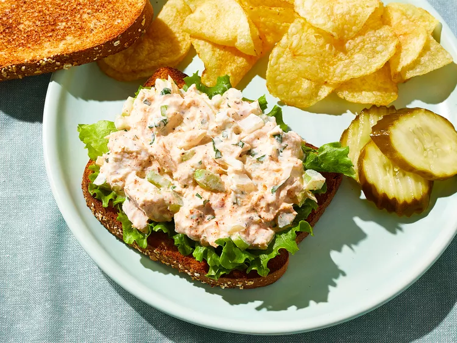

Tuna Fish Salad

This tuna fish is excellent served on top of a green salad or between two pieces of bread with fresh
Sprinkle a little paprika on top to add a little flavor and color.
Ingridients
- 1 (5 ounce) can tuna, drained
- ½ cup mayonnaise
- ¼ cup chopped celery
- ¼ cup chopped onion
- 1 tablespoon chopped fresh parsley
- ½ teaspoon lemon juice
- ¼ teaspoon garlic powder
- ⅛ teaspoon salt
- ⅛ teaspoon ground black pepper
- 1 pinch paprika, or to taste
Directions
Steps
- Combine tuna, mayonnaise, celery, onion, parsley, lemon juice, garlic powder
- Season with paprika; refrigerate until chilled.
Back